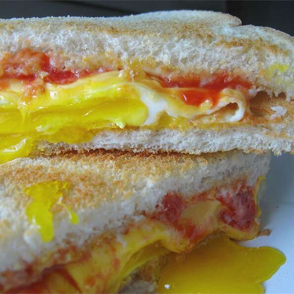

Fried Egg Sandwich

Description
Great comfort food! You can use any type of bread or cheese that you
want for this quick and easy breakfast. Serve with fruit and juice
and/or milk for a full breakfast.
Ingredients
- 2 teaspoons butter
- 4 eggs
- 4 slices processed American cheese
- 8 slices toasted white bread
- salt and pepper to taste
- 2 tablespoons mayonnaise
- 2 tablespoons ketchup
Steps
-
In a large skillet, melt butter over medium high heat. Crack eggs in
pan and cook to desired firmness. Just before eggs are cooked, place a
slice of cheese over each egg.
-
After cheese has melted, place each egg on a toasted slice of bread.
Season eggs with salt and pepper. Spread mayonnaise and ketchup on
remaining slices of bread and cover eggs with bread to make 4
sandwiches. Serve warm.